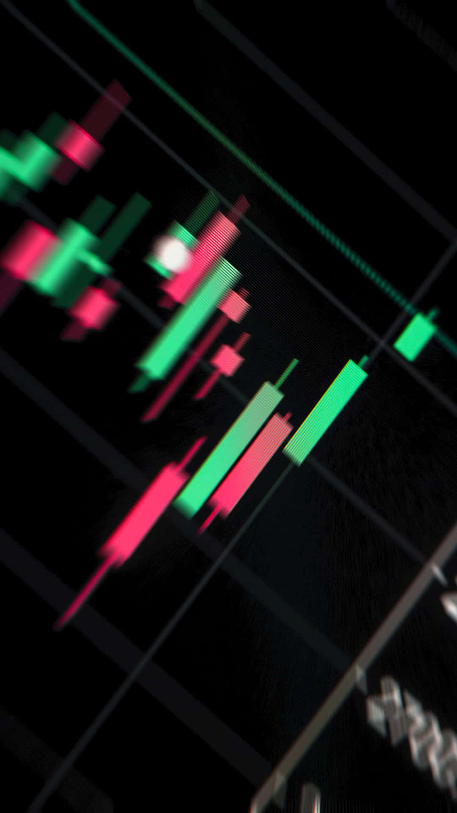

Dziennik tradera dla początkujących
Twój dziennik tradera.
Twój dziennik tradera.
Ucz się na własnych transakcjach.
Spokojny, nowoczesny dziennik forex zaprojektowany dla studentów, którzy zaczynają swoją przygodę z handlem. Bez krzykliwych liczb, bez obietnic szybkich zarobków — po prostu narzędzie, które pomoże Ci zauważyć, co naprawdę działa.

Wszystko, czego potrzebujesz w dzienniku
Bez bałaganu, bez rzeczy których nie używasz. Tylko to, co rzeczywiście pomaga się uczyć.
Szybkie dodawanie transakcji
Formularz wieloetapowy z walidacją w czasie rzeczywistym. Wpisujesz parę, lot, ceny i notatkę — pip i P&L liczone automatycznie.
Krzywa kapitału na bieżąco
Zobacz jak Twój kapitał zmienia się w czasie. Wszystkie transakcje na jednym wykresie, plus rozkład R-multiple.
Statystyki, które coś znaczą
Win rate, średnie R:R, P&L wg pary i dnia tygodnia, skuteczność tagów. Liczby, które pomogą Ci dostrzec wzorce.
Kalendarz P&L
Każdy dzień jako kafelek — zielony lub czerwony zależnie od wyniku. Kliknij dzień i zobacz dokładnie, co się wtedy działo.
Tagi i notatki
Oznaczaj setupy (breakout, pullback, news) i zostawiaj sobie notatki. Po jakimś czasie zobaczysz, co naprawdę działa.
Tryb ciemny i jasny
Domyślnie ciemny — łagodniejszy dla oczu wieczorem. Light mode dostępny jednym kliknięciem, zapamiętany między sesjami.
VisTrade jest dla Ciebie, jeśli…
Jesteś studentem
Forex to nowy świat — masz pytania, robisz błędy. Potrzebujesz miejsca, w którym możesz się przyglądać własnym decyzjom bez presji.
Zaczynasz
Trzy, może pięć transakcji za sobą. Demo albo małe konto. Najważniejsze teraz to nie stracić motywacji i nauczyć się reflektować.
Boisz się stracić pieniądze
Słusznie. VisTrade nie obiecuje cudów — tylko narzędzia, które pomogą Ci podejmować bardziej świadome decyzje.
Trzy kroki do lepszego handlu
Bez kont, bez haseł, bez maili. Otwierasz, używasz, uczysz się.
-
1
Otwórz panel
Jedno kliknięcie i jesteś w aplikacji. Wszystko działa od razu — przykładowe transakcje już są wczytane, możesz je usunąć i zacząć od zera.
-
2
Loguj transakcje
Po każdej transakcji wpisujesz parę, ceny, lot i krótką notatkę. Co poszło dobrze? Co byś zrobił inaczej? Kilka zdań wystarczy.
-
3
Wracaj i analizuj
Po tygodniu, miesiącu — patrz na statystyki. Które setupy działają? Kiedy najczęściej tracisz? Tu nie chodzi o ocenianie się, tylko o naukę.
Zawsze za darmo
VisTrade powstał jako projekt akademicki. Nie ma planów premium, nie zbieramy danych, nie sprzedajemy reklam.
Polecane
Pełna wersja
0
zł / miesiąc
- Nieograniczona liczba transakcji
- Wszystkie wykresy i statystyki
- Tryb ciemny i jasny
- Kalendarz P&L i kursy walut na żywo
- Twoje dane zostają u Ciebie (localStorage)
Gotowy na pierwszą transakcję?
Jeśli już handlujesz — zacznij prowadzić dziennik dziś. Jeśli jeszcze nie — zacznij od demo. W obu przypadkach VisTrade jest po to, żeby Ci pomóc się uczyć.
Otwórz panel